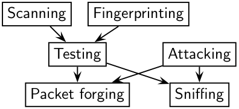
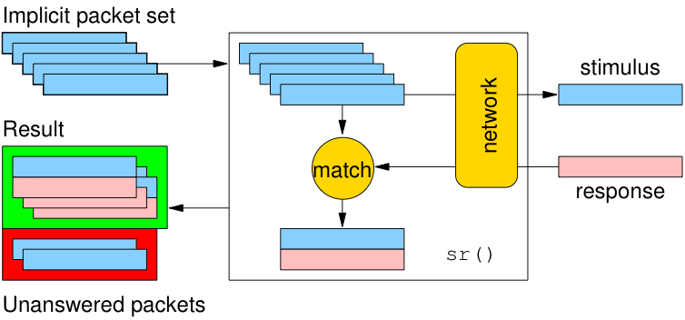
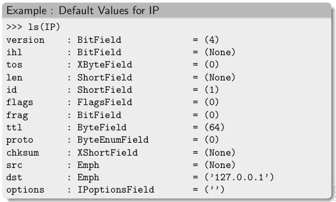

Introduction
Section author: Philippe Biondi <phil at secdev.org>
About Scapy
Scapy is a Python program that enables the user to send, sniff, dissect and forge network packets. This capability allows construction of tools that can probe, scan or attack networks.
In other words, Scapy is a powerful interactive packet manipulation program. It is able to forge or decode packets of a wide number of protocols, send them on the wire, capture them, match requests and replies, and much more. Scapy can easily handle most classical tasks like scanning, tracerouting, probing, unit tests, attacks or network discovery. It can replace hping, arpspoof, arp-sk, arping, p0f and even some parts of Nmap, tcpdump, and tshark.
{kind=link}

Scapy also performs very well on a lot of other specific tasks that most other tools can’t handle, like sending invalid frames, injecting your own 802.11 frames, combining techniques (VLAN hopping+ARP cache poisoning, VOIP decoding on WEP encrypted channel, …), etc.
The idea is simple. Scapy mainly does two things: sending packets and receiving answers. You define a set of packets, it sends them, receives answers, matches requests with answers and returns a list of packet couples (request, answer) and a list of unmatched packets. This has the big advantage over tools like Nmap or hping that an answer is not reduced to open, closed, or filtered, but is the whole packet.
On top of this can be built more high level functions. For example, one that does traceroutes and give as a result only the start TTL of the request and the source IP of the answer. One that pings a whole network and gives the list of machines answering. One that does a portscan and returns a LaTeX report.
What makes Scapy so special
First, with most other networking tools, you won’t build something the author didn’t imagine. These tools have been built for a specific goal and can’t deviate much from it. For example, an ARP cache poisoning program won’t let you use double 802.1q encapsulation. Or try to find a program that can send, say, an ICMP packet with padding (I said padding, not payload, see?). In fact, each time you have a new need, you have to build a new tool.
Second, they usually confuse decoding and interpreting. Machines are good at decoding and can help human beings with that. Interpretation is reserved for human beings. Some programs try to mimic this behavior. For instance they say “this port is open” instead of “I received a SYN-ACK”. Sometimes they are right. Sometimes not. It’s easier for beginners, but when you know what you’re doing, you keep on trying to deduce what really happened from the program’s interpretation to make your own, which is hard because you lost a big amount of information. And you often end up using tcpdump -xX to decode and interpret what the tool missed.
Third, even programs which only decode do not give you all the information they received. The vision of the network they give you is the one their author thought was sufficient. But it is not complete, and you have a bias. For instance, do you know a tool that reports the Ethernet padding?
Scapy tries to overcome those problems. It enables you to build exactly the packets you want. Even if I think stacking an 802.1q layer on top of TCP has no sense, it may have some for somebody else working on some product I don’t know. Scapy has a flexible model that tries to avoid such arbitrary limits. You’re free to put any value you want in any field you want and stack them like you want. You’re an adult after all.
In fact, it’s like building a new tool each time, but instead of dealing with a hundred line C program, you only write 2 lines of Scapy.
After a probe (scan, traceroute, etc.) Scapy always gives you the full decoded packets from the probe, before any interpretation. That means that you can probe once and interpret many times. Ask for a traceroute and look at the padding, for instance.
Fast packet design
Other tools stick to the program-that-you-run-from-a-shell paradigm. The result is an awful syntax to describe a packet. For these tools, the solution adopted uses a higher but less powerful description, in the form of scenarios imagined by the tool’s author. As an example, only the IP address must be given to a port scanner to trigger the port scanning scenario. Even if the scenario is tweaked a bit, you still are stuck to a port scan.
Scapy’s paradigm is to propose a Domain Specific Language (DSL) that enables a powerful and fast description of any kind of packet. Using the Python syntax and a Python interpreter as the DSL syntax and interpreter has many advantages: there is no need to write a separate interpreter, users don’t need to learn yet another language, and they benefit from a complete, concise, and very powerful language.
Scapy enables the user to describe a packet or set of packets as layers that are stacked one upon another. Fields of each layer have useful default values that can be overloaded. Scapy does not oblige the user to use predetermined methods or templates. This alleviates the requirement of writing a new tool each time a different scenario is required. In C, it may take an average of 60 lines to describe a packet. With Scapy, the packets to be sent may be described in only a single line, with another line to print the result. 90% of network probing tools can be rewritten in 2 lines of Scapy.
Probe once, interpret many
Network discovery is blackbox testing. When probing a network, many stimuli are sent, while only a few of them are answered. If the right stimuli are chosen, the desired information may be obtained by the responses or the lack of responses. Unlike many tools, Scapy gives all the information, i.e. all the stimuli sent and all the responses received. Examination of this data will give the user the desired information. When the dataset is small, the user can just dig for it. In other cases, the interpretation of the data will depend on the point of view taken. Most tools choose the viewpoint and discard all the data not related to that point of view. Because Scapy gives the complete raw data, that data may be used many times allowing the viewpoint to evolve during analysis. For example, a TCP port scan may be probed and the data visualized as the result of the port scan. The data could then also be visualized with respect to the TTL of the response packet. A new probe need not be initiated to adjust the viewpoint of the data.
{kind=link}

Scapy decodes, it does not interpret
A common problem with network probing tools is they try to interpret the answers received instead of only decoding and giving facts. Reporting something like Received a TCP Reset on port 80 is not subject to interpretation errors. Reporting Port 80 is closed is an interpretation that may be right most of the time but wrong in some specific contexts the tool’s author did not imagine. For instance, some scanners tend to report a filtered TCP port when they receive an ICMP destination unreachable packet. This may be right, but in some cases, it means the packet was not filtered by the firewall, but rather there was no host to forward the packet to.
Interpreting results can help users that don’t know what a port scan is, but it can also make more harm than good, as it injects bias into the results. What can tend to happen is that knowledgeable users will try to reverse engineer the tool’s interpretation to derive the facts that triggered that interpretation, so that they can do the interpretation themselves. Unfortunately, much information is lost in this operation.
Quick demo
First, we play a bit and create four IP packets at once. Let’s see how it works. We first instantiate the IP class. Then, we instantiate it again and we provide a destination that is worth four IP addresses (/30 gives the netmask). Using a Python idiom, we develop this implicit packet in a set of explicit packets. Then, we quit the interpreter. As we provided a session file, the variables we were working on are saved, then reloaded:
# ./run_scapy -s mysession
New session [mysession]
Welcome to Scapy (2.4.0)
>>> IP()
<IP |>
>>> target="www.target.com/30"
>>> ip=IP(dst=target)
>>> ip
<IP dst=<Net www.target.com/30> |>
>>> [p for p in ip]
[<IP dst=207.171.175.28 |>, <IP dst=207.171.175.29 |>,
<IP dst=207.171.175.30 |>, <IP dst=207.171.175.31 |>]
>>> ^D
# ./run_scapy -s mysession
Using session [mysession]
Welcome to Scapy (2.4.0)
>>> ip
<IP dst=<Net www.target.com/30> |>
Now, let’s manipulate some packets:
>>> IP()
<IP |>
>>> a=IP(dst="172.16.1.40")
>>> a
<IP dst=172.16.1.40 |>
>>> a.dst
'172.16.1.40'
>>> a.ttl
64
Let’s say I want a broadcast MAC address, and IP payload to ketchup.com and to mayo.com, TTL value from 1 to 9, and an UDP payload:
>>> Ether(dst="ff:ff:ff:ff:ff:ff")
/IP(dst=["ketchup.com","mayo.com"],ttl=(1,9))
/UDP()
We have 18 packets defined in 1 line (1 implicit packet)
Sensible default values
Scapy tries to use sensible default values for all packet fields. If not overridden,
IP source is chosen according to destination and routing table
Checksum is computed
Source MAC is chosen according to the output interface
Ethernet type and IP protocol are determined by the upper layer
{kind=link}

Other fields’ default values are chosen to be the most useful ones:
TCP source port is 20, destination port is 80.
UDP source and destination ports are 53.
ICMP type is echo request.
Learning Python
Scapy uses the Python interpreter as a command board. That means that you can directly use the Python language (assign variables, use loops, define functions, etc.)
If you are new to Python and you really don’t understand a word because of that, or if you want to learn this language, take an hour to read the very good Python tutorial by Guido Van Rossum. After that, you’ll know Python :) (really!). For a more in-depth tutorial Dive Into Python is a very good start too.